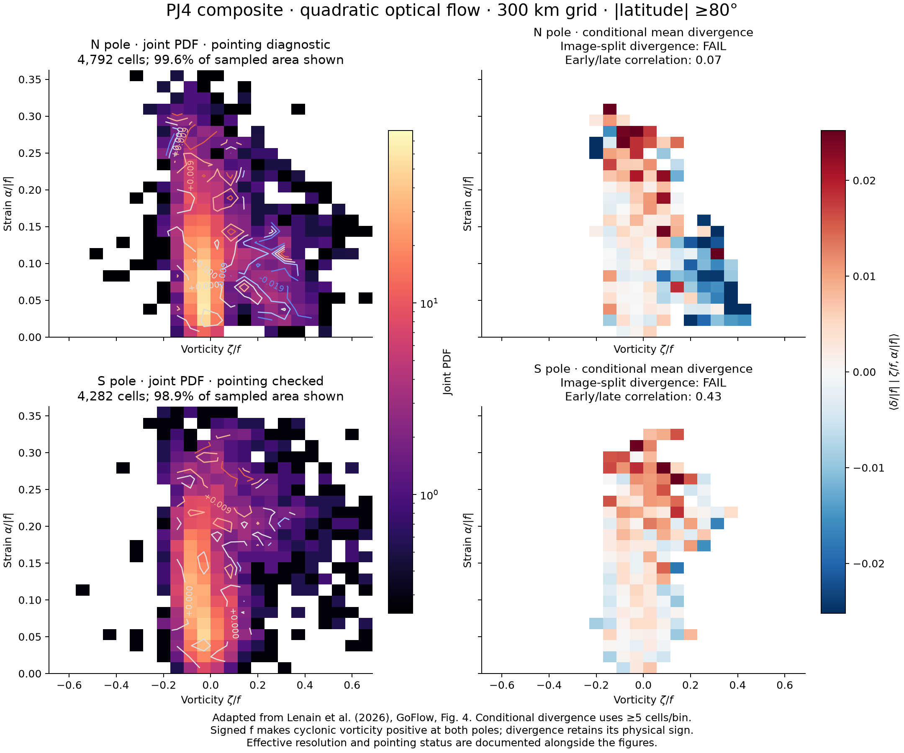
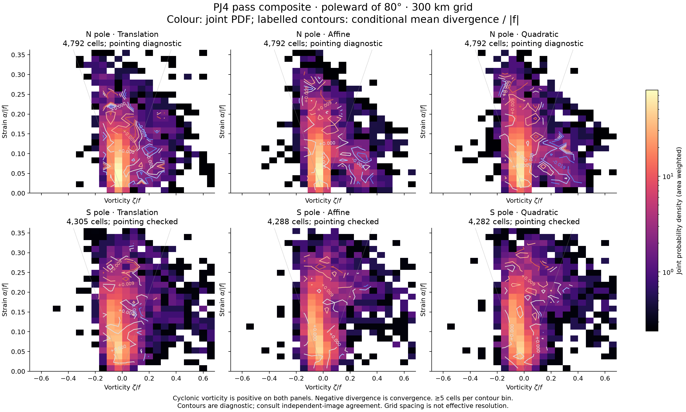
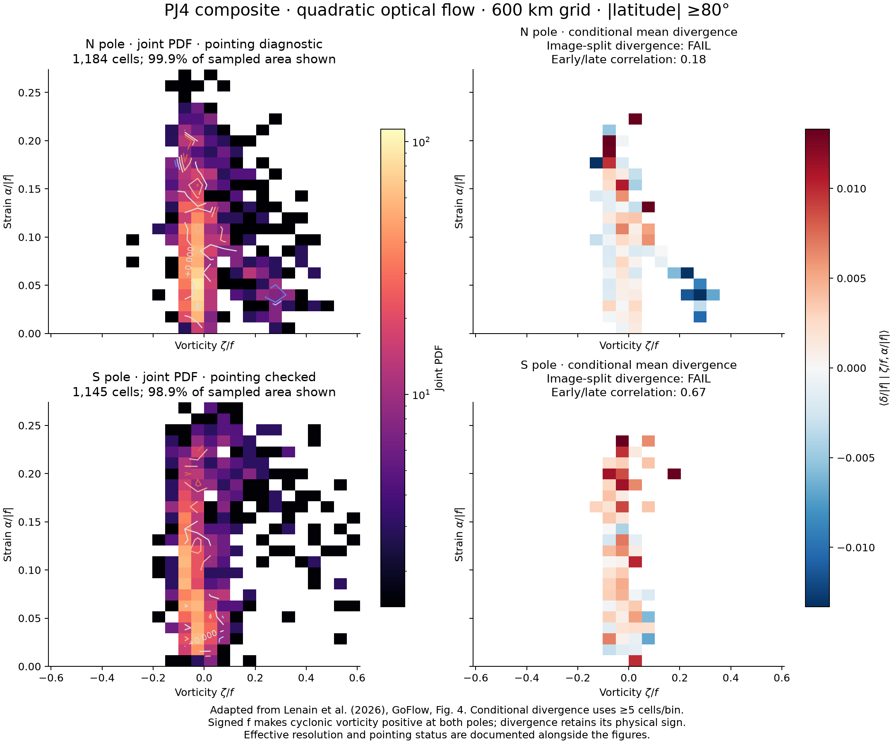
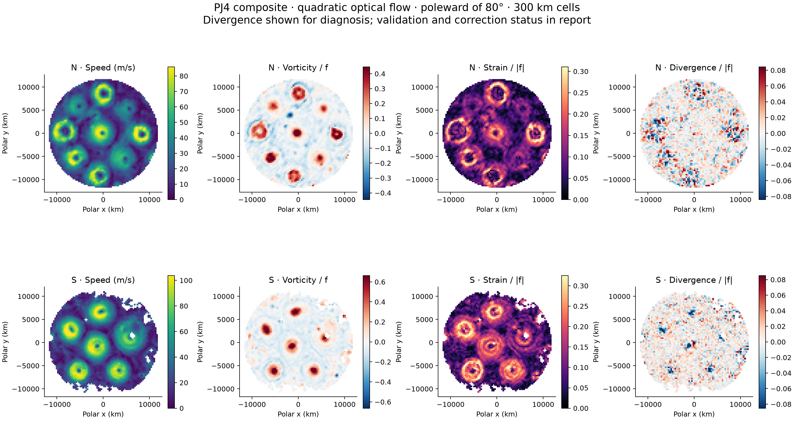
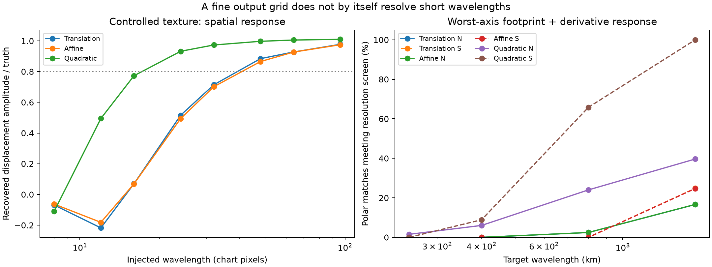

Polar winds, vorticity and strain
Native camera-corrected optical flow at both poles, with GoFlow-style joint PDFs and divergence contours.
Observations: 2 February 2017 · Computed on Unity · Results updated 11 November 2026 UTCWhat this run establishes
The computation is complete; validation is mixed. The native-image estimates and requested plots are available for both poles. Northern pointing-adjusted fields remain diagnostic because the original broad-amplitude synthetic test failed. Southern pointing fits pass their specified gates. Divergence fails the independent-image checks at both poles at the 300 and 600 km grids shown here. Vorticity repeats substantially better. This run does not validate SQG over the published 250–1,600 km band.
All images and full match tables remain on Unity. These are calibrated detector exposures from PDS, not raw telemetry and not rendered atlas PNGs. The fixed detector correction is applied before tracking; a separate network estimates per-image pointing offsets. No velocities were fitted to published winds or to an SQG prediction.
Joint vorticity–strain PDFs, contoured by divergence
Following Lenain, Srinivasan, Barkan & Pizzo (2026), GoFlow, Figure 4, colour shows the area-weighted joint density of vorticity ζ/f and total strain α/|f|. Labelled contours give the conditional mean divergence ⟨δ/|f| | ζ/f, α/|f|⟩; the right panels show the same conditional divergence as colour. This contour overlay is the requested adaptation of the paper.
Cyclonic vorticity is positive at both poles because f is signed. Strain is nonnegative, and negative divergence means convergence. Each occupied map cell is counted once, weighted by its physical area. The many reused image matches are not treated as independent PDF samples.

Open the figure view · Download this figure as PDF · 600 km comparison

Coarser grid and all figure scales

PDFs at 150 km, 300 km, 600 km, 1,200 km. The downloadable archive includes all model comparisons and numerical histogram arrays.
The conditional divergence pattern is not reproducible. At 300 km, early/late conditional-bin correlations are only 0.186 north and 0.171 south; bin-sign agreement is 57% and 60%. Smooth contours do not demonstrate reliable divergence. The image-split tests are reported even where they fail. Display limits are set from the pooled 99.5th-percentile ranges; density is normalized by total sampled area, not renormalized after clipping. Each panel states the fraction shown.
Velocity estimates near the poles
Cellwise physical eastward and northward velocities are provided for both poles. The following speeds describe the sampled 300 km cells poleward of 80° in the quadratic pass composite. They are not time-resolved winds or measurements of the entire polar cap.
| Pole | Median speed (m/s) | 90th percentile (m/s) | Velocity cells | Derivative cells | Pointing status |
|---|---|---|---|---|---|
| N | 24.66 | 61.60 | 4792 | 4792 | Diagnostic |
| S | 25.90 | 78.63 | 4549 | 4282 | Pointing checks passed |

Observation times represented in the polar composite
| Pole | First image START (UTC) | Last image START (UTC) |
|---|---|---|
| N | 2017-02-02 08:10:21.933000+00:00 | 2017-02-02 12:25:41.823000+00:00 |
| S | 2017-02-02 13:58:56.781000+00:00 | 2017-02-02 15:48:06.903000+00:00 |
These intervals cover the images contributing to the ≥75° gridding buffer, not a simultaneous exposure. The original papers’ selected mosaics use a shorter northern interval.
How much does the motion model change the answer?
These comparisons use common 300 km cells. They measure method agreement, not absolute accuracy.
| Pole | Models | Median vector difference (m/s) | 90th percentile (m/s) | Vorticity correlation |
|---|---|---|---|---|
| N | Translation–affine | 2.58 | 10.55 | 0.925 |
| N | Affine–quadratic | 2.68 | 4.59 | 0.992 |
| S | Translation–affine | 1.60 | 5.64 | 0.976 |
| S | Affine–quadratic | 0.77 | 1.80 | 0.998 |
Quadratic deformation recovers shorter injected wavelengths more effectively in the controlled texture test. It is not uniformly the most accurate method in the historical published-image benchmark: the affine median difference from TRACKER4 is 1.57 m/s, versus 1.95 m/s for quadratic. Those historical numbers compare fits to the same mapped images and are not native-camera accuracy estimates.
Adversarial validation
Pointing offsets: improvement does not erase a failed gate
| Pole | Held-out RMS before → after (m/s) | Broad-injection remainder (m/s) | Actual-fit block remainder (m/s) | Original gate |
|---|---|---|---|---|
| N | 52.43 → 11.13 | 0.5376 | 0.07667 | Fail |
| S | 26.37 → 19.74 | 0.0692 | 0.00521 | Pass |
The broad synthetic injection uses fixed offset scales of 0.1, 0.25 and 1 mrad, before fitting. The preset limit on linear versus nonlinear transport is 0.10 m/s RMS. The northern quadratic injection exceeds it, despite recovering the injected wind to 1.55 m/s RMS. The original failed result is preserved. A separate, subsequent audit evaluates nonlinearity on the network blocks at the offsets actually selected by the fit; it does not replace the broad test or convert a failed release into a pass.
The network chooses its regularization by fivefold held-out pair error on a prespecified grid. Its zero-mean and zero-time-trend offset constraints set a reference convention; they do not provide independent absolute pointing truth. Fixed detector-calibration uncertainty has not been propagated into a complete physical error budget.
Separate images and separate times
At 300 km, early/late vorticity correlations are 0.878 north and 0.976 south; divergence correlations are only 0.069 and 0.429. At 600 km, vorticity rises to 0.963 and 0.994, while divergence remains weaker at 0.183 and 0.672. Southern vorticity and strain pass the specified combined checks; northern fields retain their diagnostic pointing status even when numerical repeatability is high.
Random A/B groups share no images. Early/late halves also share no images and challenge the pass-composite assumption. Early/late fits use the scalar prior chosen from the full pass, but refit winds and image offsets separately. Different footprints, sampling and actual evolution all contribute to disagreement.
| Pole | Grid (km) | Field | Random r | Early/late r | Early/late RMS / SD | Shared cells | Combined check |
|---|---|---|---|---|---|---|---|
| N | 300 | Vorticity | 0.983 | 0.878 | 0.51 | 3620 | Fail |
| N | 300 | Strain | 0.953 | 0.713 | 0.79 | 3620 | Fail |
| N | 300 | Divergence | 0.749 | 0.069 | 1.37 | 3620 | Fail |
| N | 600 | Vorticity | 0.997 | 0.963 | 0.28 | 965 | Fail |
| N | 600 | Strain | 0.989 | 0.894 | 0.49 | 965 | Fail |
| N | 600 | Divergence | 0.860 | 0.183 | 1.28 | 965 | Fail |
| S | 300 | Vorticity | 0.981 | 0.976 | 0.22 | 2709 | Pass |
| S | 300 | Strain | 0.978 | 0.915 | 0.41 | 2709 | Pass |
| S | 300 | Divergence | 0.639 | 0.429 | 1.07 | 2709 | Fail |
| S | 600 | Vorticity | 0.997 | 0.994 | 0.11 | 728 | Pass |
| S | 600 | Strain | 0.990 | 0.977 | 0.22 | 728 | Pass |
| S | 600 | Divergence | 0.813 | 0.672 | 0.81 | 728 | Fail |
A numerical repeatability pass requires at least 100 shared cells, correlation ≥0.8 and RMS difference ≤0.75 of the pooled spatial standard deviation. The combined check additionally requires both halves’ pointing gates to pass. The downloadable table separates numerical repeatability from this combined status. Individual grid cells are spatially correlated; these correlations are descriptive, not significance tests.
Checks that passed
- All 1,111 native image sizes and archive-label MD5 checksums; all native observation geometries.
- Independent camera projection, distortion inverse, and explicit NAIF aberration composition checks.
- Controlled affine and quadratic deformation: matching-model 90th-percentile displacement error below 0.024 chart pixels.
- Independent, unaccelerated readback of stored pilot displacements and physical velocity conversion.
- Analytic rotation, expansion and trace-free strain on the oblate polar map, in both hemispheres and at all four derivative scales.
Protocol revisions and retained failures
The first full camera round-trip assertion incorrectly treated NAIF reception and transmission aberration routines as exact inverses. Their expected nonclosure is at most 5.38 × 10⁻⁵ detector pixels. An explicit independent composition check accounts for it, leaving 1.88 × 10⁻¹² pixels. This changed the test, not the camera calculation or tracking thresholds.
A geometry-selected northern pilot had a median apparent speed of about 346 m/s among image-quality-passing affine matches. The original 300 m/s cut retained only 366 of 3,773. Before full-data analysis, the network input was changed to retain all finite image-quality-passing matches, preserving the original flags in the frozen tracking products. The 300 m/s screen is applied after the checked or explicitly diagnostic adjustment for these maps. No apparent 346 m/s motion was accepted as a wind measurement.
After the northern synthetic gate failed, diagnostic exports were added without changing the frozen tracker, selected fit, thresholds or failed result. This is a disclosed post-fit diagnostic, not a successful prespecified release.
Can this check the high-wavenumber SQG reconstruction?
Not across the full 250–1,600 km band with this configuration. The test requires the measured motion-response and derivative-response product to be at least 0.8, evaluated with the worst-axis native footprint. At 250 km the quadratic response screen leaves 76,327 northern matches in the ≥78° coverage buffer and no southern matches. Requiring 20 matches from at least three pairs per cell plus all centred-difference neighbours leaves zero derivative cells poleward of 80° at either pole.

The selected no-gap comparison domain would additionally require four wavelengths at the longest scale in each direction. That prerequisite is not reached, so no radiance-to-vorticity correlation or spectrum is presented as a validated SQG test. A subsequent diagnostic Figure 2 comparison is now available with explicit resolution and processing limits. This is failure of this analysis design’s coverage and resolution prerequisites; it neither falsifies SQG nor proves that another estimator or selected time window cannot test it.
The published reference code uses τ = log₁₀(I₀/I), N = 0.004 s⁻¹ and H = 9,000 m. Any subsequent comparison must preserve that logarithm and physical amplitude instead of fitting them to the tracked field. The published four-mosaic result and this full-pass composite also have different temporal and spatial sampling.
Methods and interpretation
Tracking uses calibrated M-band detector images, the repository’s in-use empirical detector correction, label START times, SPICE geometry, stellar aberration and light-time treatment on the IAU Jupiter 1-bar ellipsoid. The empirical correction has held-out support in the source repository; its unique optical cause is not established. Files are read using the verified little-endian convention used by the catalog, despite the PDS4 byte-order inconsistency.
The native chart has two samples per detector pixel. Local 15-chart-pixel windows fit translation, affine or quadratic displacement, with forward/reverse correlation, closure, texture, conditioning and search-bound tests. Physical surface displacement divided by pair time gives east/north velocity. Per-image pointing is fitted separately using shared image and spatial constraints.
For each map, a cell contains medians of at least 20 matches from at least three pairs. Centred differences on an oblate conformal polar projection include the metric factors. ζ is relative vertical vorticity, δ horizontal divergence, and α = √[(∂u/∂x − ∂v/∂y)² + (∂v/∂x + ∂u/∂y)²] in a local orthonormal frame. f = 2Ω sin(planetographic latitude); the plotted latitude mask is planetocentric. There is no arbitrary strain floor, gap filling or assumption that 300 km grid spacing means 300 km resolved motion.
These are pass composites. Native pixel footprints, observation time, patch support and effective resolution vary across the map. Among the retained matches in the ≥75° buffer, median tracking-window widths are approximately 920 km north and 438 km south (RMS-axis measure); the resolution screen separately uses the more conservative worst-axis footprint. The sampled area is not an unbiased census of either polar cap. Absolute wind reference, per-image geometry, unresolved structure and cloud evolution remain material limitations.
What is actually in the JOVE archive?
The archive was inspected directly: its file inventory, numerical-array headers, PJ4 source-image headers, provenance records and the code that produced the assets. Its expanded size is 51.39 GB. Large size alone does not identify the processing level.
| Stored content | Expanded size | Meaning |
|---|---|---|
| Numerical globe arrays | 42.48 GB | Includes 17.72 GB of blending weights and 8.25 GB of mapped radiance |
| PNG images | 8.59 GB | Rendered map and thumbnail products |
| Metadata, code and other files | 0.32 GB | Includes source identifiers and acquisition instructions |
The 82 PJ4 M-band source PNGs are 4096 × 2048, 8-bit RGBA maps. Their provenance identifies 535 native observations. The numerical arrays are globe-grid arrays, not separate detector exposures; no native .IMG files are embedded in this ZIP. This distinction does not make the archive merely a picture collection: it includes mapped scalar radiance.
The source references are usable. All 535 identifiers were found in the public PDS orbit04 listing. The full image collection has now been downloaded directly to Unity: 3,333 files, comprising 1,111 detector images and their labels, totaling 277.19 MB. Geometry kernels were retrieved separately. Native images remain on Unity.
Correction to the initial workflow: the first benchmark proceeded with published maps before following the archive’s native-data references. That was an unnecessary limitation. The new analysis starts from detector images.
Comparison with the published winds
The completed historical benchmark reconstructs northern winds from 48 published mapped images and compares with 68 TRACKER4 vectors. Median vector differences are 1.99 m/s (translation), 1.57 m/s (affine), and 1.95 m/s (quadratic). Image-disjoint groups differ by approximately 15 m/s, including evolution across different observation times.
Correction, 11 November 2026: JOVE already contains a validated fitted map projection; the earlier report missed that evidence. The new 10 km supplementary maps and Figure 2 footprint are now geographically registered using radiance alone. The point-by-point Siegelman comparison finds strong large-scale agreement and weak, resolution-limited agreement with SQG. Agreement with published winds is not used to tune the camera or claim absolute native velocity accuracy.
Download the figures and derived fields
All compact native results (ZIP) · Data guide · Independent-image checks · Contour repeatability · Model comparisons · Sector statistics
The archive contains all PNG/PDF figures, histogram arrays, 300 and 600 km quadratic fields for both poles, checksums, protocols and validation records. Geographic velocity columns are u_east and v_north in m/s. U and V are the rotated polar-map components. Large images and patch tables remain on Unity; no bulk archive was copied locally.